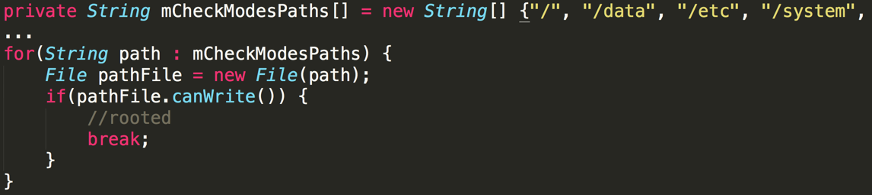
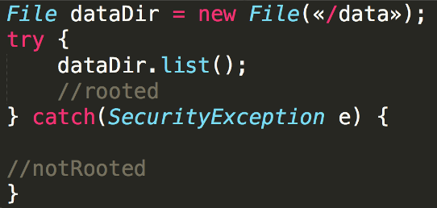
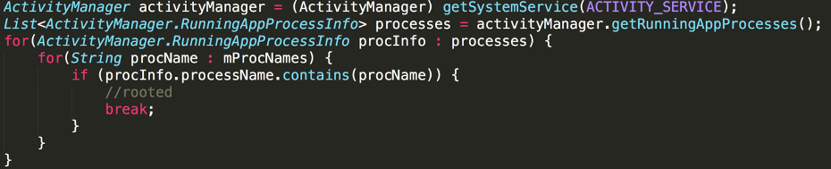

Запуск и работа приложений в ОС без проверки окружения может нести значительные риски.
Злоумышленник или легальный пользователь могут запускать приложение на устройстве с правами root с целью создания фейковых аккаунтов, накруток различных показателей, исследования взаимодействия приложения с ОС и другими приложениями, а также исследования взаимодействия приложения по сети, в том числе с серверной частью (исследование API). Установка и работа в таком окружении значительно снижает безопасность данных пользователя и потенциально увеличивает риск финансовых и репутационных потерь для поставщика приложения.
Запуск приложения на устройстве, на котором пользователь имеет права root, серьезно снижает существующие защитные механизмы ОС Андроид. Пользователю и в некоторых случаях приложениям становятся доступны приватное хранилище, запуск неэкспортированных компонентов и другие опасные действия.
Слабой или недостаточной проверкой на root является использование менее двух проверок разного типа. Например: приложение проверяет только наличие файлов su и/или SuperUser.apk во всех возможных местах файловой системы.
Стандартная проверка на root:
Приложение при стандартной проверке должно проверять:
SystemProperties.
Наличие известных приложений сопутствующих правам root (root packages).
Наличие файлов su, busybox, supersu, magisk и т. п. (File.exist()).
Возможность запустить команду, доступную только при наличии, root прав или результат такой команды, говорящий о наличии прав (Runtime.exec()).
!!! note "Примечание"
Проверкой одного типа называется проверка, использующая один из методов API. При этом сама проверка может быть использована многократно с разными входными данными. Яркий пример — использование метода File.exist() для проверки наличия в файловой системе некоторого перечня файлов. Другой пример — использование статических полей класса Build для проверки на эмулятор. Данный класс содержит множество полей, однако их использование относится к одному и тому же типу проверок.
Рекомендации
Приложение при запуске и во время работы должно проверять косвенные и непосредственные значения параметров ОС, указывающие на наличие прав root и эмулятора.
Для определения прав root возможны следующие проверки:
Поиск файлов из списка: su, busybox, supersu, Superuser.apk, KingoUser.apk, SuperSu.apk, magisk, к примеру:
public static final String[] paths = {"/system", "/system/bin", "/system/sbin", "/system/xbin", "/vendor/bin", "/sbin", "/etc"};
public boolean chekBinaryFile(String fileName) {
boolean result = false;
for (String path : paths) {
if (new File(path, fileName).exists()) {
Log.d("detect", "binary " + fileName + "detected");
result = true;
}
}
return result;
}
try {
propertyStream = Runtime.getRuntime().exec("getprop").getInputStream();
} catch (IOException | NoSuchElementException e) {
e.printStackTrace();
}
if (propertyStream == null) {
// no accesss to getprop
} else {
BufferedReader bufferedReader = new BufferedReader(
new InputStreamReader(propertyStream));
StringBuilder log = new StringBuilder();
String line;
try {
while ((line = bufferedReader.readLine()) != null) {
//getprop возвращает список свойств в виде списка
// [<propertyName>]:[<propertyvalue>]
}
Запуск команд через shell, к примеру поиск бинарного файла su (process = Runtime.getRuntime().exec(new String[]{"which", "su"});).

Проверка режимов доступа к файлам и директориям.
Проверить можно, имеются ли права на чтение для директории /data.
Для проверки наличия этих прав могут использоваться методы Java API:
File.canRead,
File.canWrite,
а также метод языка C — access().
Также, можно попытаться создать временный файл в одной из директорий (для проверки прав записи) или прочитать содержимое директории (для проверки прав чтения).

или

Проверка запущенных процессов/приложений
Метод ActivityManager.getRunningAppProcesses возвращает список запущенных процессов.
Он может быть использован для поиска тех приложений, которые требуют root-привилегий.
Аналогично, методы getRunningServices и/или getRecentTasks могут быть использованы для поиска запущенных сервисов и задач приложений.

И еще несколько советов:
Не используйте стандартные имена переменных isRooted/rooted.
Можно использовать простую модель с накоплением и границей. То есть, для каждой проверки назначается некоторый вес и, при превышении порогового значения, приложение считает, что устройство скомпроментировано.
Нужно продумать, что именно делать в случае обнаружения root, запрещать ли пользователю работать с приложением или просто уведомлять его? Также хорошо бы передавать эту информацию в профильные подразделения, например в антифрод.
Одним из хороших способов является использование библиотек DetectFrida и DetectMagiskHide. Данные библиотеки реализуют проверки в нативном коде, что существенно усложняет их анализ и модификацию.
Стоит учитывать, что существуют приложения, которые скрывают Root-доступ и определить его будет сложнее: